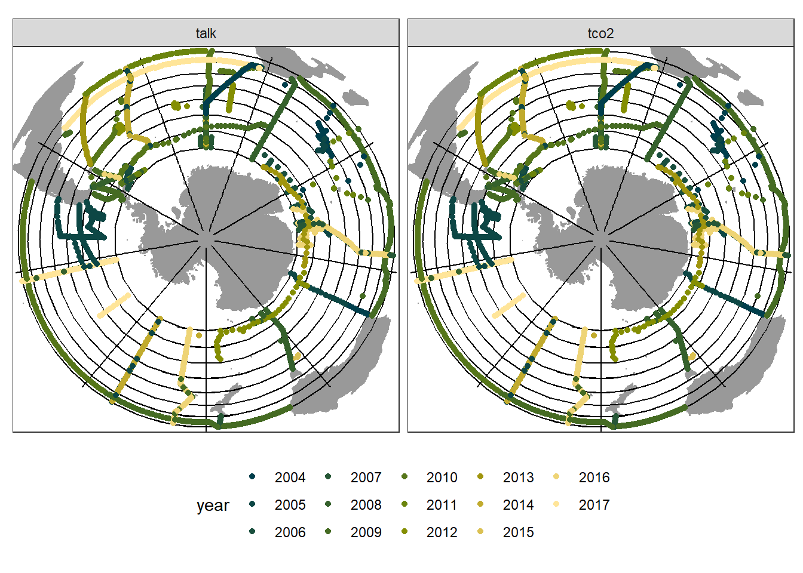
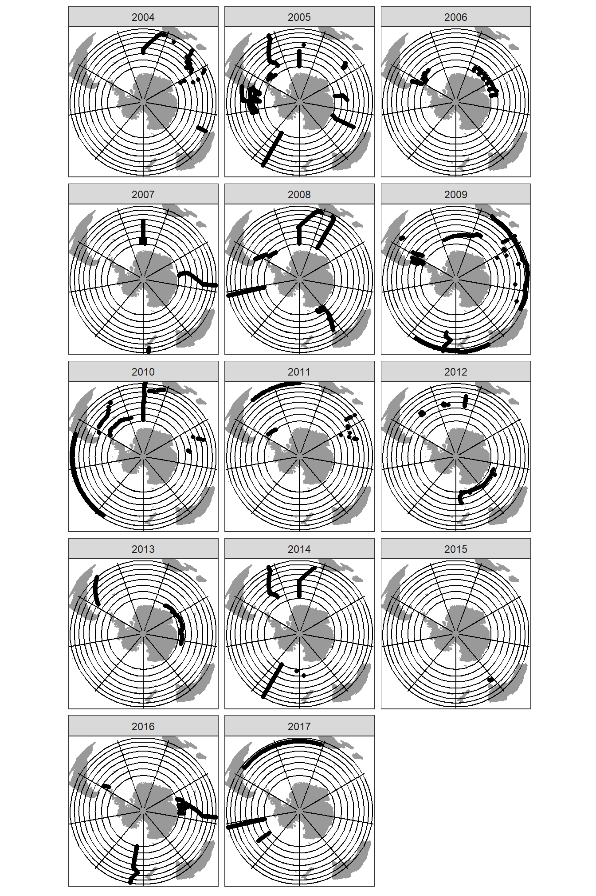
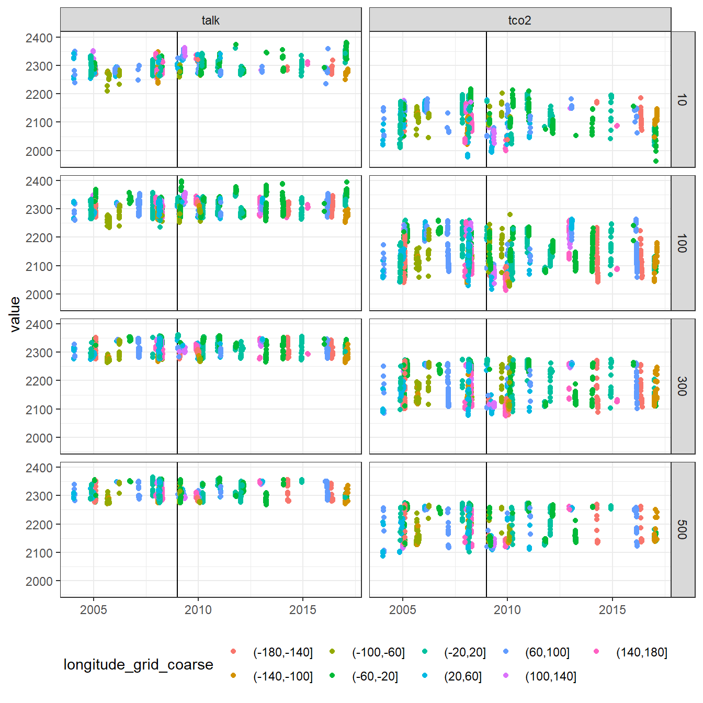
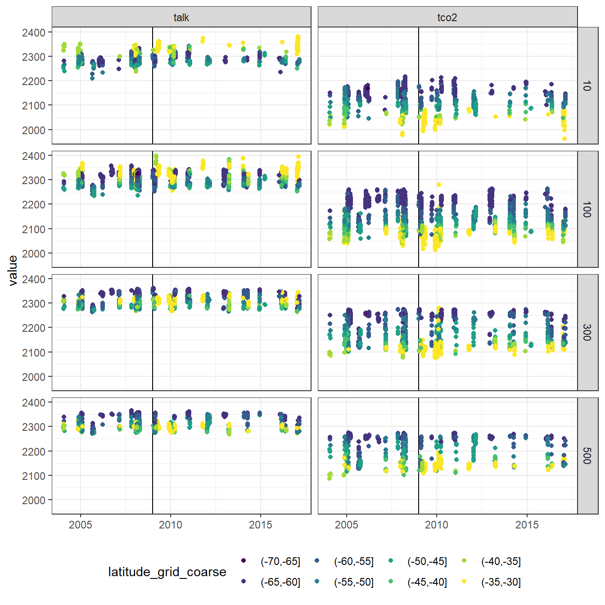
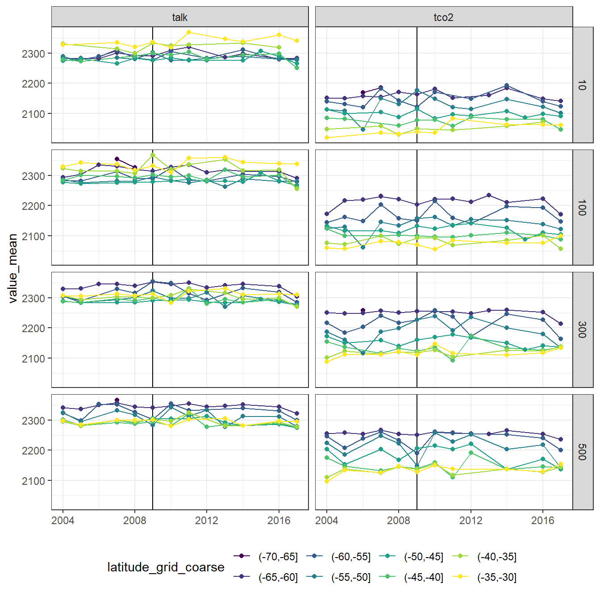
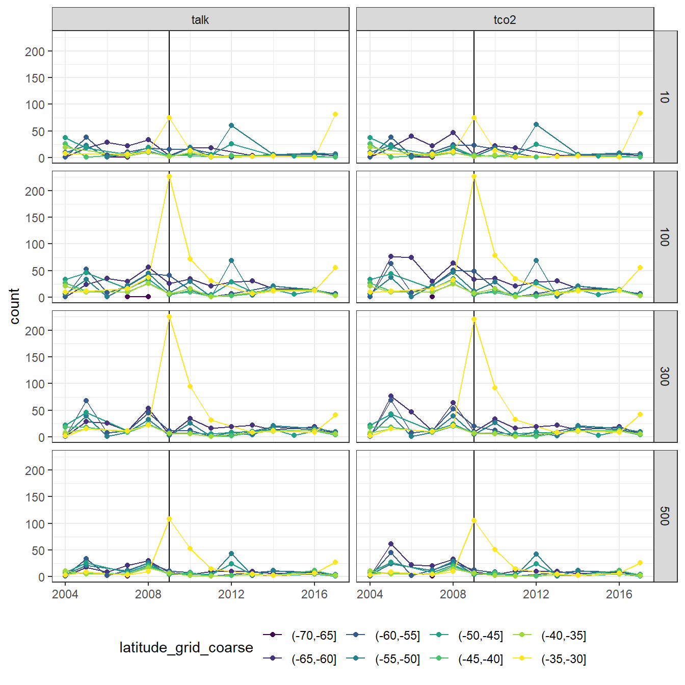
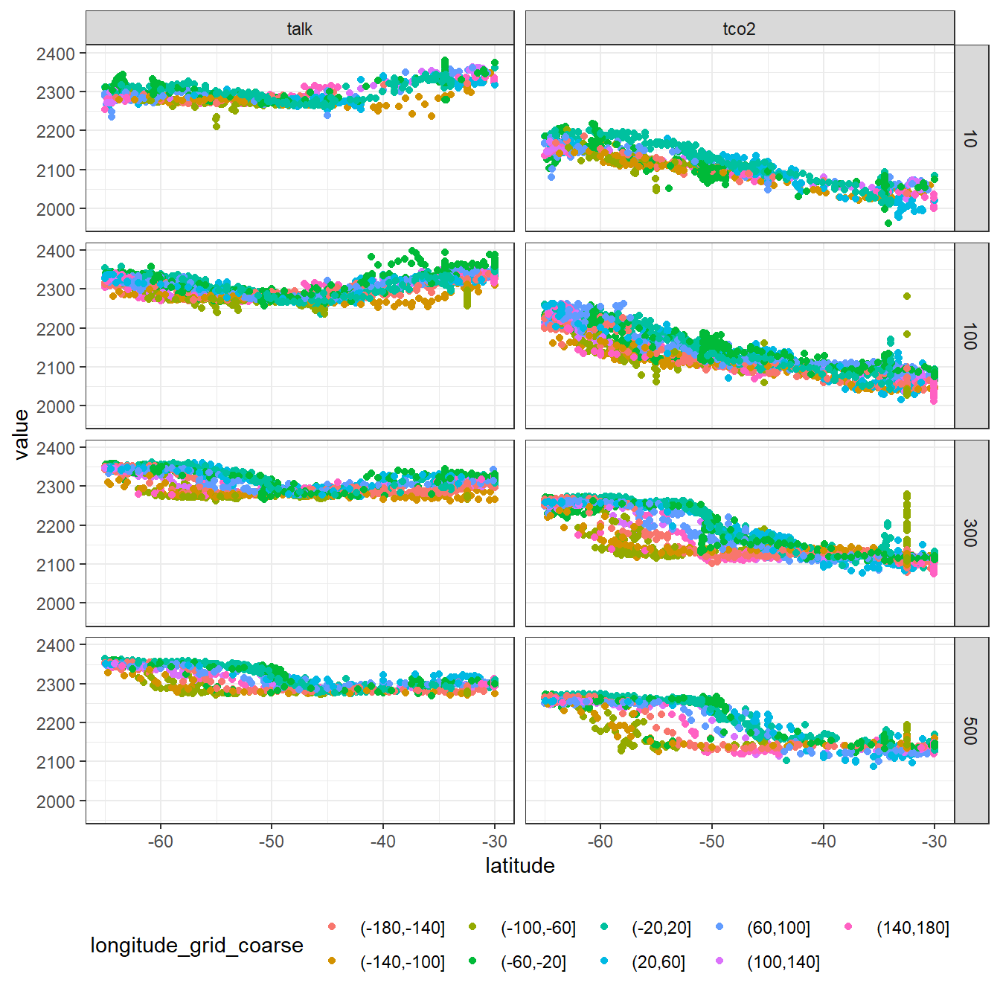
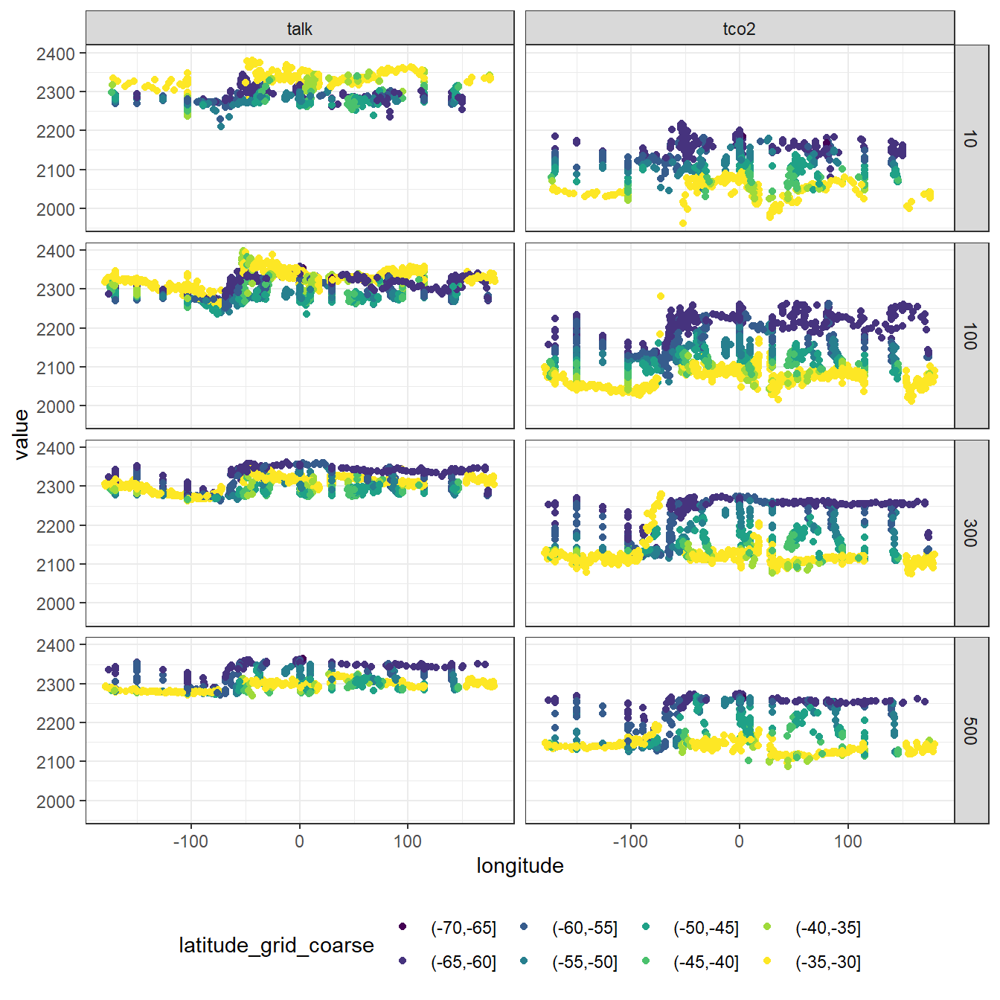
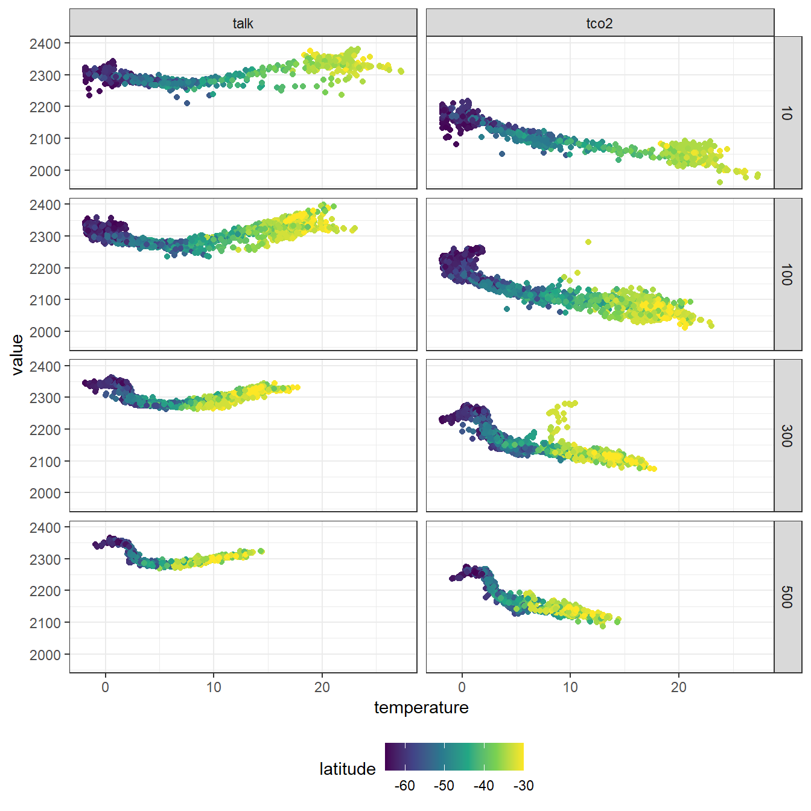

Southern Ocean CO2-system patterns and dynamics
Jens Daniel Müller
23 April, 2020
Last updated: 2020-04-23
Checks: 7 0
Knit directory: GLODAP_AT_Southern_Ocean/
This reproducible R Markdown analysis was created with workflowr (version 1.6.1). The Checks tab describes the reproducibility checks that were applied when the results were created. The Past versions tab lists the development history.
Great! Since the R Markdown file has been committed to the Git repository, you know the exact version of the code that produced these results.
Great job! The global environment was empty. Objects defined in the global environment can affect the analysis in your R Markdown file in unknown ways. For reproduciblity it’s best to always run the code in an empty environment.
The command set.seed(20200421) was run prior to running the code in the R Markdown file. Setting a seed ensures that any results that rely on randomness, e.g. subsampling or permutations, are reproducible.
Great job! Recording the operating system, R version, and package versions is critical for reproducibility.
Nice! There were no cached chunks for this analysis, so you can be confident that you successfully produced the results during this run.
Great job! Using relative paths to the files within your workflowr project makes it easier to run your code on other machines.
Great! You are using Git for version control. Tracking code development and connecting the code version to the results is critical for reproducibility.
The results in this page were generated with repository version 45001f9. See the Past versions tab to see a history of the changes made to the R Markdown and HTML files.
Note that you need to be careful to ensure that all relevant files for the analysis have been committed to Git prior to generating the results (you can use wflow_publish or wflow_git_commit). workflowr only checks the R Markdown file, but you know if there are other scripts or data files that it depends on. Below is the status of the Git repository when the results were generated:
Ignored files:
Ignored: .Rhistory
Ignored: .Rproj.user/
Ignored: data/_summarized_data_files/
Note that any generated files, e.g. HTML, png, CSS, etc., are not included in this status report because it is ok for generated content to have uncommitted changes.
These are the previous versions of the repository in which changes were made to the R Markdown (analysis/SO_AT.Rmd) and HTML (docs/SO_AT.html) files. If you’ve configured a remote Git repository (see ?wflow_git_remote), click on the hyperlinks in the table below to view the files as they were in that past version.
| File | Version | Author | Date | Message |
|---|---|---|---|---|
| Rmd | 45001f9 | jens-daniel-mueller | 2020-04-23 | include talk tco2 correlation plot |
| html | ef23978 | jens-daniel-mueller | 2020-04-23 | Build site. |
| Rmd | e7ae53d | jens-daniel-mueller | 2020-04-23 | corrected histogram plot, added explanation and structure |
| html | 6db86dd | jens-daniel-mueller | 2020-04-23 | Build site. |
| Rmd | 29cf67e | jens-daniel-mueller | 2020-04-23 | color scale map |
| html | f49f815 | jens-daniel-mueller | 2020-04-22 | Build site. |
| Rmd | f8aba8c | jens-daniel-mueller | 2020-04-22 | improved fig.asp |
| html | 3bddc2a | jens-daniel-mueller | 2020-04-22 | Build site. |
| Rmd | 4be5292 | jens-daniel-mueller | 2020-04-22 | corrected flag subsetting |
| html | baa4e0b | jens-daniel-mueller | 2020-04-22 | Build site. |
| Rmd | d214801 | jens-daniel-mueller | 2020-04-22 | all analysis for tco2 and talk |
| html | 236fdd6 | jens-daniel-mueller | 2020-04-22 | Build site. |
| Rmd | 35120fa | jens-daniel-mueller | 2020-04-22 | correlation with talk ant temo |
| html | 1d813a5 | jens-daniel-mueller | 2020-04-22 | Build site. |
| Rmd | 8e6250b | jens-daniel-mueller | 2020-04-22 | mean tco2 time series |
| html | a3cf0f3 | jens-daniel-mueller | 2020-04-22 | Build site. |
| Rmd | af08cee | jens-daniel-mueller | 2020-04-22 | tco2: SO map, timeseries, spatial patterns |
| html | af08cee | jens-daniel-mueller | 2020-04-22 | tco2: SO map, timeseries, spatial patterns |
| html | c91284f | jens-daniel-mueller | 2020-04-22 | Build site. |
| Rmd | 4e53ce4 | jens-daniel-mueller | 2020-04-22 | print quality flags |
| html | 3faabb7 | jens-daniel-mueller | 2020-04-22 | Build site. |
| Rmd | 2d5e51b | jens-daniel-mueller | 2020-04-22 | worldmap and all subsetting in SO_AT |
| html | b7184e9 | jens-daniel-mueller | 2020-04-21 | Build site. |
| Rmd | b62bbbd | jens-daniel-mueller | 2020-04-21 | SO map and distribution plots for tCO2 and talk |
| html | 372c518 | jens-daniel-mueller | 2020-04-21 | Build site. |
| Rmd | 71c82dc | jens-daniel-mueller | 2020-04-21 | added SO Rmd file |
library(tidyverse)
library(lubridate)
library(scico)1 Subsetting criteria
SO_lat_high <- -30
SO_lat_low <- -65
year_start <- 2004
year_end <- 2017
depth_lower_limit <- 500
f <- 2
qc <- 1Southern Ocean is defined here as the area between:
- higher latitude: -30
- lower latitude: -65
Time is restricted to years from:
- 2004 to 2017
Only observations with:
- maximum depth: 500
- quality flag f: 2
- quality flag qc: 1
were investigated. Quality flags were checked individually for tco2 and talk. The resulting data sets were merged, such that each accepted tco2 and talk is kept and we have observations with only one of both parameters determined.
GLODAP <- read_csv(here::here("data/_summarized_data_files", "GLODAPv2.2019_Merged_Master_File_JM.csv"),
guess_max = 1e5)
# GLODAP_SO <- GLODAP_SO %>%
# mutate(decade = as.factor(decade))
GLODAP_SO <- GLODAP %>%
filter(latitude <= SO_lat_high, latitude >= SO_lat_low)
GLODAP_SO <- GLODAP_SO %>%
filter(year >= year_start, year <= year_end)
GLODAP_SO_tco2 <- GLODAP_SO %>%
filter(tco2f == f,
tco2qc == qc,
!is.na(tco2))
GLODAP_SO_talk <- GLODAP_SO %>%
filter(talkf == f,
talkqc == qc,
!is.na(talk))
GLODAP_SO <- full_join(GLODAP_SO_tco2, GLODAP_SO_talk)
rm(GLODAP_SO_talk, GLODAP_SO_tco2)
GLODAP_SO <- GLODAP_SO %>%
filter(depth <= depth_lower_limit)
GLODAP_SO <- GLODAP_SO %>%
select(date, cruise:bottomdepth, depth:salinity, tco2, talk)
GLODAP_SO %>% write_csv(here::here("data/_summarized_data_files",
"GLODAPv2.2019_Merged_Master_File_JM_SO.csv"))rm(depth_lower_limit, f, qc, SO_lat_high, SO_lat_low, year_end, year_start)
GLODAP_SO <- read_csv(here::here("data/_summarized_data_files", "GLODAPv2.2019_Merged_Master_File_JM_SO.csv"),
guess_max = 1e5)
GLODAP_SO_long <- GLODAP_SO %>%
pivot_longer(tco2:talk, names_to = "var", values_to = "value")2 Gridding
2.1 Vertical
depth_levels <-
c(2.5,
5,
seq(10,50,10),
seq(75,150,25),
seq(200,500,50),
seq(600,1900,100), 1975)
depth_intervals <-
c(replace_na(depth_levels - (depth_levels - lag(depth_levels))/2, 0),
2000)As an adaptation of Lydia’s interpolation to 33 depth levels:
2.5, 5, 10, 20, 30, 40, 50, 75, 100, 125, 150, 200, 250, 300, 350, 400, 450, 500, 600, 700, 800, 900, 1000, 1100, 1200, 1300, 1400, 1500, 1600, 1700, 1800, 1900, 1975
data were clustered into depth intervals between following depth limits:
0, 3.75, 7.5, 15, 25, 35, 45, 62.5, 87.5, 112.5, 137.5, 175, 225, 275, 325, 375, 425, 475, 550, 650, 750, 850, 950, 1050, 1150, 1250, 1350, 1450, 1550, 1650, 1750, 1850, 1937.5, 2000
However, the intervals were labeled with the exact same numbers as used by Lydia. This grouping in comparison to linear interpolation avoids creating “unobserved” values at the cost of less precise vertical information.
GLODAP_SO_long <- GLODAP_SO_long %>%
mutate(depth_grid = as.numeric(as.character(cut(depth,
breaks = depth_intervals,
labels = depth_levels,
include.lowest = TRUE))))
GLODAP_SO <- GLODAP_SO %>%
mutate(depth_grid = as.numeric(as.character(cut(depth,
breaks = depth_intervals,
labels = depth_levels,
include.lowest = TRUE))))
# GLODAP_SO_long_depth_grid <- GLODAP_SO_long %>%
# select(date, year, month, latitude, longitude, tco2, talk, depth, depth_grid) %>%
# group_by(depth_grid, year, month) %>%
# summarise_all(lst(mean, sd, min, max), na.rm=TRUE) %>%
# ungroup()2.2 Horizontal
Observations were gridded to a 1° x 1° degree latitude and longitude grid.
For exploratory analysis, data were also clustered into coarse 20°-longitude and 5°-latitude grids.
GLODAP_SO_long <- GLODAP_SO_long %>%
mutate(latitude_grid = as.numeric(as.character(cut(latitude,
breaks = seq(-90, 90, 1),
labels = seq(-89.5,89.5,1)))),
longitude_grid = as.numeric(as.character(cut(longitude,
breaks = seq(-180, 180, 1),
labels = seq(-179.5,179.5,1)))),
latitude_grid_coarse = cut(latitude, seq(-90,90,5)),
longitude_grid_coarse = cut(longitude, seq(-180, 180, 40)))3 Spatial distribution
3.1 Surface map
All observations (tco2 and/or talk), were plotted with each sampling year being displayed as color or indivdual facet. Sampling depth was not taken into account at his stage, but it is assumed that mainly completed profiles were submitted to GLODAP.
It appears that:
- homogenious distribution of observations in space and time is questionable, which can be critical for trend and variability analysis
- Most sampling events are organized either meridional or zonal
- in 2009/10 many observations exist in 30-35°S
map_southpole <- borders("world", colour="gray60", fill="gray60", ylim = c(-90,-25)) # create a layer of borders
GLODAP_SO_long %>%
ggplot(aes(longitude, latitude, col=as.factor(year)))+
map_southpole+
geom_hline(yintercept = seq(-65, -30, 5))+
geom_vline(xintercept = seq(-180, 180, 40))+
geom_point()+
coord_map("ortho", orientation = c(-90, 0, 0),
ylim = c(-85,-30), xlim = c(-180,180))+
scale_color_scico_d(palette = "bamako", name="year")+
#scale_color_viridis_d(option = "magma", name="year")+
theme(axis.text = element_blank(),
axis.title = element_blank(),
axis.ticks = element_blank(),
panel.grid = element_blank())+
facet_wrap(~var)+
theme(legend.position = "bottom")
GLODAP_SO_long %>%
ggplot(aes(longitude, latitude))+
map_southpole+
geom_hline(yintercept = seq(-65, -30, 5))+
geom_vline(xintercept = seq(-180, 180, 40))+
geom_point()+
coord_map("ortho", orientation = c(-90, 0, 0),
ylim = c(-85,-30), xlim = c(-180,180))+
scale_color_viridis_d(name="year")+
theme(axis.text = element_blank(),
axis.title = element_blank(),
axis.ticks = element_blank(),
panel.grid = element_blank())+
facet_wrap(~year, ncol = 3)
4 Time series
4.1 Observed values
Observed tco2 and talk for selected depth levels were plotted, colored by coarse latitute and longitude grids.
First impressions are:
tco2is lower thantalkand more variable (as expected)tco2increases with latitude- latitudinal patterns less pronounced for
talk - longitudinal patterns less pronounced for both parameters
- dip around 2009 might be biased by sampling pattern
GLODAP_SO_long %>%
filter(depth_grid %in% c(10, 100, 300, 500)) %>%
ggplot(aes(date, value, col=longitude_grid_coarse))+
geom_vline(xintercept = ymd("2009-01-01"))+
geom_point()+
facet_grid(depth_grid~var)+
theme(axis.title.x = element_blank())+
theme(legend.position = "bottom")
GLODAP_SO_long %>%
filter(depth_grid %in% c(10, 100, 300, 500)) %>%
ggplot(aes(date, value, col=latitude_grid_coarse))+
geom_vline(xintercept = ymd("2009-01-01"))+
geom_point()+
scale_color_viridis_d()+
facet_grid(depth_grid~var)+
theme(axis.title.x = element_blank())+
theme(legend.position = "bottom")
4.2 Mean values
In order to minimize the effect of latitudinal sampling bias in the time series plots, the annual mean tco2 and talk were calculted for 5°-latitude intervals.
First impressions:
- 2009
tco2dip only detectable in 500m and intermediate latitudes - similar dip seems to be detectable in
talk, questioning the MOC hypothesis
GLODAP_SO_long_mean_lat <- GLODAP_SO_long %>%
group_by(year, latitude_grid_coarse, depth_grid, var) %>%
summarise(value_mean = mean(value, na.rm=TRUE)) %>%
ungroup() %>%
arrange(depth_grid, var, year) %>%
filter(!is.na(value_mean))GLODAP_SO_long_mean_lat %>%
filter(depth_grid %in% c(10, 100, 300, 500)) %>%
ggplot(aes(year, value_mean, col=latitude_grid_coarse))+
geom_vline(xintercept = 2009)+
geom_line()+
geom_point()+
scale_color_viridis_d()+
facet_grid(depth_grid~var)+
theme(axis.title.x = element_blank())+
theme(legend.position = "bottom")
4.3 Number of observations
The annual number of observation were calculted for 5 degree latitude intervals.
- Outstanding high number of observations in 2009 at 30-35°S
GLODAP_SO_long_nr_lat <- GLODAP_SO_long %>%
filter(!is.na(value)) %>%
group_by(year, latitude_grid_coarse, depth_grid, var) %>%
summarise(count = n()) %>%
ungroup()GLODAP_SO_long_nr_lat %>%
filter(depth_grid %in% c(10, 100, 300, 500)) %>%
ggplot(aes(year, count, col=latitude_grid_coarse))+
geom_vline(xintercept = 2009)+
geom_line()+
geom_point()+
scale_color_viridis_d()+
facet_grid(depth_grid~var)+
theme(axis.title.x = element_blank())+
theme(legend.position = "bottom")
5 Spatial patterns
In order to order to gain a more precise idea about the spatial distribution of tco2 and talk, both parameters were plotted against latitude and colored by longitude, and vice versa.
GLODAP_SO_long %>%
filter(depth_grid %in% c(10, 100, 300, 500)) %>%
ggplot(aes(latitude, value, col=longitude_grid_coarse))+
geom_point()+
facet_grid(depth_grid~var)+
theme(legend.position = "bottom")
GLODAP_SO_long %>%
filter(depth_grid %in% c(10, 100, 300, 500)) %>%
ggplot(aes(longitude, value, col=latitude_grid_coarse))+
geom_point()+
scale_color_viridis_d()+
facet_grid(depth_grid~var)+
theme(legend.position = "bottom")
6 Correlations
6.1 tco2/talk vs temperature
tco2 and talk were plotted against temperature.
First impression: - DIC depends more strongly on temperature, likely due to the higher solubilty of cold waters
GLODAP_SO_long %>%
filter(depth_grid %in% c(10, 100, 300, 500)) %>%
ggplot(aes(temperature, value, col=latitude_grid_coarse))+
geom_point()+
scale_color_viridis_d()+
facet_grid(depth_grid~var)+
theme(legend.position = "bottom")
6.2 tco2 vs talk
GLODAP_SO %>%
filter(depth_grid %in% c(10, 100, 300, 500)) %>%
ggplot(aes(talk, tco2, col=latitude))+
geom_point()+
scale_color_viridis_c()+
facet_wrap(~depth_grid)
7 Open tasks / questions
- Check duplicated analysis at identical sampling location and time
- Check correct subsetting by flag: Do we only have paired tco2/talk observations?
8 Checks with Lydia
- number of tco2 observations in SO
sessionInfo()R version 3.6.3 (2020-02-29)
Platform: i386-w64-mingw32/i386 (32-bit)
Running under: Windows 10 x64 (build 18363)
Matrix products: default
locale:
[1] LC_COLLATE=English_Germany.1252 LC_CTYPE=English_Germany.1252
[3] LC_MONETARY=English_Germany.1252 LC_NUMERIC=C
[5] LC_TIME=English_Germany.1252
attached base packages:
[1] stats graphics grDevices utils datasets methods base
other attached packages:
[1] scico_1.1.0 lubridate_1.7.4 forcats_0.5.0 stringr_1.4.0
[5] dplyr_0.8.5 purrr_0.3.3 readr_1.3.1 tidyr_1.0.2
[9] tibble_3.0.0 ggplot2_3.3.0 tidyverse_1.3.0 workflowr_1.6.1
loaded via a namespace (and not attached):
[1] jsonlite_1.6.1 rstudioapi_0.11 generics_0.0.2 magrittr_1.5
[5] farver_2.0.3 gtable_0.3.0 rmarkdown_2.1 vctrs_0.2.4
[9] fs_1.4.0 hms_0.5.3 xml2_1.3.0 pillar_1.4.3
[13] htmltools_0.4.0 haven_2.2.0 later_1.0.0 broom_0.5.5
[17] cellranger_1.1.0 lattice_0.20-41 tidyselect_1.0.0 knitr_1.28
[21] git2r_0.26.1 whisker_0.4 lifecycle_0.2.0 pkgconfig_2.0.3
[25] R6_2.4.1 digest_0.6.25 xfun_0.12 colorspace_1.4-1
[29] rprojroot_1.3-2 stringi_1.4.6 yaml_2.2.1 evaluate_0.14
[33] labeling_0.3 fansi_0.4.1 httr_1.4.1 compiler_3.6.3
[37] here_0.1 cli_2.0.2 withr_2.1.2 backports_1.1.5
[41] munsell_0.5.0 DBI_1.1.0 modelr_0.1.6 Rcpp_1.0.4
[45] readxl_1.3.1 mapproj_1.2.7 maps_3.3.0 dbplyr_1.4.2
[49] ellipsis_0.3.0 assertthat_0.2.1 tools_3.6.3 reprex_0.3.0
[53] viridisLite_0.3.0 httpuv_1.5.2 scales_1.1.0 crayon_1.3.4
[57] glue_1.3.2 rlang_0.4.5 nlme_3.1-145 rvest_0.3.5
[61] promises_1.1.0 grid_3.6.3